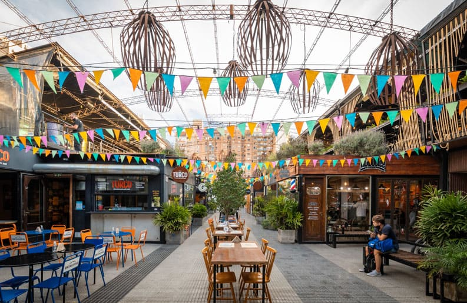
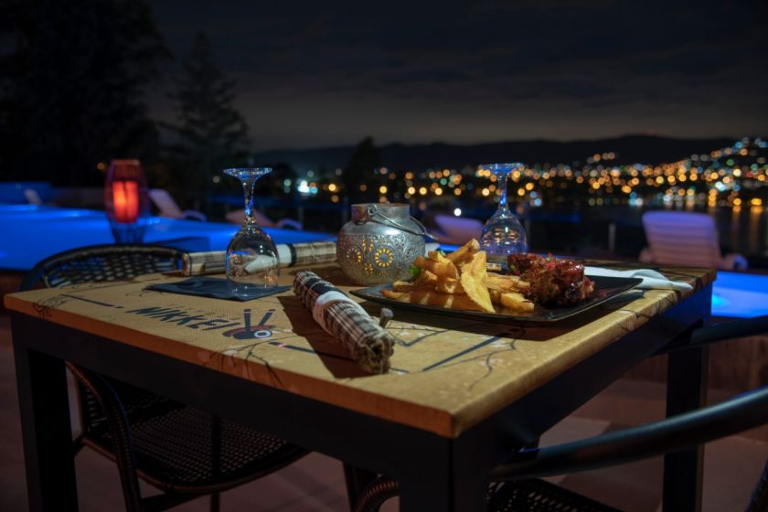

Viví La Experiencia Gastronómica
Nuestros espacios están pensados para que disfrutes de una experiencia gastronómica sin igual en el corazón de Córdoba. Desde el colorido ambiente urbano de nuestras galerías más icónicas como Paseo Güemes, hasta acogedores cafecitos boutique y patios gastronómicos al aire libre, cada rincón combina arquitectura histórica, arte local y una propuesta culinaria contemporánea pensada para deleitar todos tus sentidos.
No es solo salir a comer, es crear momentos inolvidables. Descubrí propuestas gastronómicas de primer nivel que fusionan sabores autóctonos e internacionales, maridadas a la perfección con coctelería de autor y cervezas artesanales locales. Disfrutá de cenas exclusivas en terrazas con vistas panorámicas bajo las luces de la noche cordobesa, sumergiéndote en una atmósfera vibrante que te invita a celebrar.
